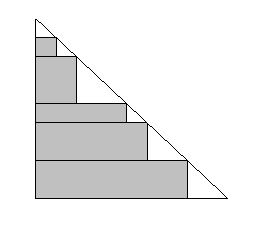

НОВ БЪЛГАРСКИ УНИВЕРСИТЕТ
Департамент Информатика
XVIIІ РЕПУБЛИКАНСКА СТУДЕНТСКА ОЛИМПИАДА ПО
ПРОГРАМИРАНЕ
13 - 14 май 2006 г.

Задача E. Правоъгълници в
триъгълник
 В
равнобедрен правоъгълен триъгълник са вписани (без припокриване) n правоъгълника (0 < n < 200), както е показано на рисунката.
Правоъгълниците имат целочислени координати на върховете си и са със страни, съответно успоредни на катетите на
триъгълника, а върховете им лежат върху страните на триъгълника. Напишете
програма, която въвежда n и дължината b на катета на
триъгълника (цяло положително число, по-малко от 2000), и извежда лицето на
най-голямата площ, която може да се покрие с правоъгълниците.
Програмата трябва да
прочете от стандартния вход броя на тестовите примери (не повече от 10), след което – данните за всеки тестов пример от
отделен ред, съдържащ n и b, разделени с интервал. На стандарния изход трябва да се изведат търсените лица, всяко
на отделен ред, съответно на входните данни.
Пример.
Вход.
3
1 1
1 2
2 10
Изход
0
1
33